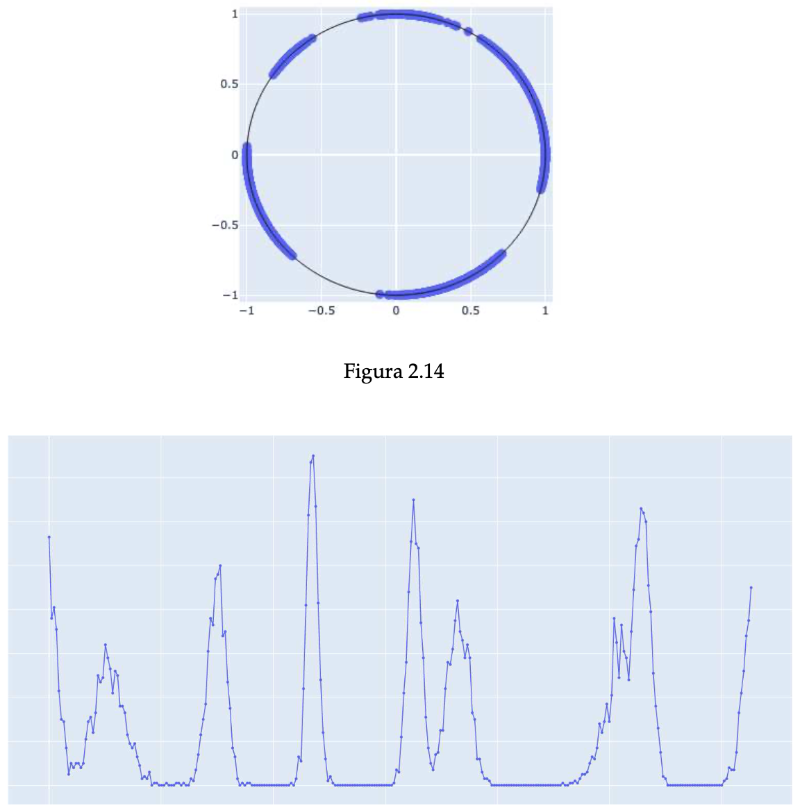

Deep clustering
Titolo: Deep CircleClustering: Integration of Optimisation on \(S^1\) in Deep Learning Architectures for Self-Consistent Clustering

Contesto
L’algoritmo CircleClustering introduce un paradigma innovativo di clustering non supervisionato basato sulla proiezione dei dati su un cerchio unitario e su un sistema dinamico discreto con dinamica asincrona che converge a un minimo locale di una funzione di costo definita su \([0,2\pi]^L\)
I punti chiave dell’approccio sono:
- Riduzione della dimensionalità su \(S^1\)
- Separazione geometrica tramite angoli
- Inferenza automatica del numero di cluster
- Funzione di Lyapunov come criterio di stabilità
Tuttavia, l’algoritmo opera su una matrice di similarità predefinita e non apprende una rappresentazione ottimale dei dati.
Nasce quindi l’idea di integrare CircleClustering come strato strutturale differenziabile all’interno di un modello Deep Learning.
Obiettivo
Progettare un modello Deep Learning innovativo che:
- Apprenda uno spazio latente ottimale.
- Proietti dinamicamente le embedding su \(S^1\).
- Integri un layer CircleClustering differenziabile.
- Ottimizzi congiuntamente rappresentazione e separazione.
- Inferisca automaticamente il numero di cluster.
Idea Innovativa
1️⃣ Embedding Learning
Dato un dataset \(X \in \mathbb{R}^{n \times d}\):
\[ Z = f_\theta(X) \]
dove \(f_\theta\) è una rete neurale.
2️⃣ Proiezione angolare learnable
Ogni embedding è mappata in:
\[ \xi_i = (\cos \theta_i, \sin \theta_i) \]
con:
\[ \theta_i = g_\phi(Z_i) \]
dove \(g_\phi\) è un MLP che produce angoli.
3️⃣ Loss Circle-Based
Si utilizza la funzione costo originale:
\[ J(\theta) = \frac{1}{2} \sum_{i<j} w_{ij} \cos(\theta_i - \theta_j) \]
ma con \(w_{ij}\) appreso dinamicamente:
\[ w_{ij} = \text{sim}(Z_i, Z_j) \]
Il modello apprende sia la metrica che la disposizione su \(S^1\).
4️⃣ Differentiable Circle Optimization
Invece di aggiornamento asincrono discreto, si usa:
- Gradient descent su \(\theta\)
- Oppure un layer neurale che approssima l’equilibrio dinamico
Questo rende l’intero sistema end-to-end.
Architettura Proposta
- Encoder (MLP / Transformer / GNN)
- Angle projection head
- Circle optimization layer
- Density estimation head
- Gaussian Mixture inference layer
Attività
- Formalizzazione matematica del problema differenziabile.
- Studio della stabilità del sistema in ambiente deep.
- Implementazione PyTorch del CircleLayer.
- Confronto con:
- KMeans
- Spectral Clustering
- Deep Embedded Clustering (DEC)
- Contrastive clustering
- Studio della scalabilità (GPU).
Contributi Scientifici Attesi
- Primo modello Deep Learning con clustering geometrico su \(S^1\).
- Integrazione di funzione di Lyapunov in loss neurale.
- Riduzione della necessità di iperparametri.
- Inferenza strutturale del numero di cluster.
- Possibile estensione a \(S^k\) (ipersfere).
Dataset di Validazione
- Benchmark sintetici (G2MG, H2MG)
- UCI high-dimensional
- Dataset multimodali
- Embedding vision o motion forecasting
Risultati Attesi
- Migliore robustezza rispetto a metodi deep classici.
- Stabilità numerica superiore.
- Migliore interpretabilità geometrica.
- Convergenza più regolare rispetto a DEC.
Estensioni Future
- CircleClustering su manifolds generali.
- Integrazione con metric learning.
- Versione probabilistica bayesiana.
- CircleClustering per segmentation.
Papers:
- Scarica la tesi completa (PDF)
- Boccignone et al. (2025)